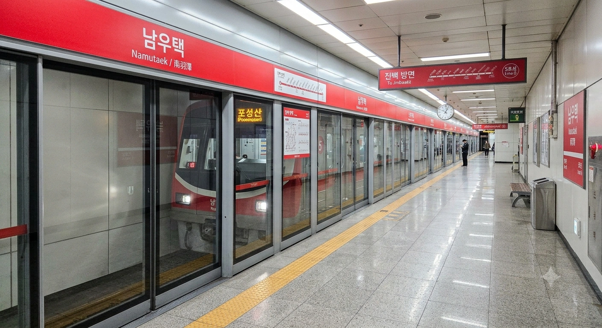

- 1. 개요
- 2. 역 정보
- 3. 역 주변 정보
- 3.1. 출구 정보
- 4. 일평균 이용객
- 5. 승강장
- 5.1. 5호선
- 5.2. 창전선 (개통 예정)
- 6. 연계 교통
- 7. 기타 (기존 원문)
- 8. 여담 (남우택역 7대 전설)
1. 개요
효빈 도시철도 5호선 512번 및 미개통 노선인 창전선 C11번(예정). 효빈광역시 청엽구 우택동 1465 소재.
현재는 5호선 단일 역이나, 향후 **창전선** 1단계 구간이 개통되면 환승역이 될 예정이다. 특히 창전선의 **급행 열차 정차역**으로 지정되어 교통 편의성이 대폭 향상될 전망이다.
2. 역 정보
청엽구의 주요 주거 지역인 우택동의 남쪽 관문 역할을 하는 역이다. 지하 2층 규모의 아담한 5호선 역사 위에, 창전선 모노레일 역사가 지상 3층 규모로 신설될 예정이다. 인근 주민들의 발이 되어주는 전형적인 주거지 밀착형 역이자, 동구대학교와 바로 연결되는 '대학가 역'이기도 하다.
3. 역 주변 정보
역 주변은 평화로운 주거 단지가 형성되어 있다. 대형 마트와 학교들이 적절히 배치되어 있어 살기 좋은 동네라는 평이 많다.
3.1. 출구 정보

 남우택역 출구 정보
남우택역 출구 정보
|
||
|---|---|---|
| 번호 | 주요 시설 및 방향 | 비고 |
| 1 | 코스트코 효빈점, 사온초등학교, 청엽국제학교(도보) | 주말 정체 주의 |
| 2 | 우택중학교, 우택고등학교, 우택상월아파트, 우택호수공원(남측) | 등하교 시간 혼잡 |
| 3 | 동구대학교 (효빈캠퍼스) 정문 | 신설 (바로 연결) |
4. 일평균 이용객
|
남우택역 이용객 통계
| ||
|---|---|---|
| 연도 | 일평균 이용객 | 비고 |
| 2020년 | 12,534명 | 코로나19 여파 |
| 2021년 | 12,675명 | |
| 2022년 | 14,851명 | 대면수업 재개 및 수요 회복 |
| 2023년 | 14,999명 | |
| 2024년 | 15,022명 | 1.5만 명 돌파 |
5. 승강장
5.1. 5호선

| 청엽국제학교 ↑ | ||||
| 하 | ㅣ | ㅣ | 상 | |
| ↓ 진백 | ||||
| 상 |
효빈 도시철도 5호선 |
청덕공원 방면 |
| 하 |
효빈 도시철도 5호선 |
포성산 방면 |
5.2. 창전선 (개통 예정)
| 진백중앙 (예정) ↑ | ||||
| 하 | ㅣ | ㅣ | 상 | |
| ↓ 우택중앙 (예정) | ||||
| 상 |
창전선 |
팔조 · 신창전 · 진백중앙 방면 |
| 하 |
창전선 |
하성천 · 효빈역 · 토모리해수욕장 방면 |
6. 연계 교통
| 버스 연계 교통 | ||
|---|---|---|
| 구분 | 정류소명 | 노선 번호 |
| 순방향 | 남우택 | 1, 16, 18, 38, 48, 154, 381, 612, 632, 842 |
| 역방향 | 남우택(건너편) | 01-1, 61, 81, 83, 84, 514, 381, 612, 632, 842 |
7. 기타
- 역이 위치한 우택동(Utaek-dong)은 BanG Dream!의 밴드 'Afterglow'의 키보디스트이자 학생회장인 '하자와 츠구미(羽沢 つぐみ)'의 성씨 '하자와(羽沢)'를 한국식 한자음 '우택'으로 읽은 것과 같아 팬들 사이에서 엮이곤 한다. 본격 효빈의 츠구미 성지
- '츠구'스러운 역세권: 모티브가 된 츠구미의 성실하고 야무진 성격처럼, 역 주변은 유흥가 없이 깔끔한 아파트 단지와 독서실, 보습학원들이 밀집해 있어 효빈시 내에서도 면학 분위기가 좋기로 소문난 곳이다. 청엽구 학부모들이 가장 선호하는 거주지 중 하나다.
- 카페 거리의 형성: 츠구미의 집이 카페(Hazawa Coffee)를 운영한다는 설정에 착안하여, 역 2번 출구 뒷골목에는 아기자기한 개인 카페들이 모여 '우택 카페거리'를 형성하고 있다. 팬들은 이곳에서 커피와 케이크를 먹으며 "츠구미가 타준 커피 같다"는 후기를 남기곤 한다. 근데 사장님이 츠구미는 아니다
-
**동구대학교의 관문**
3번 출구 신설 전에는 동구대학교 학생들이 1번 출구로 나와 횡단보도를 건너야 하는 불편함이 있었으나, 창전선 공사와 함께 **3번 출구**가 신설되면서 학교 정문과 바로 연결되어 통학 편의성이 획기적으로 개선되었다. 덕분에 등하교 시간대 남우택역은 동구대 과잠을 입은 학생들로 인산인해를 이룬다. -
**창전선 급행 정차의 수혜**
남우택역은 창전선 **급행 열차 정차역**으로 지정되었다. 이는 동구대학교 통학 수요와 우택동의 주거 수요를 모두 고려한 결정으로 보인다. 5호선과 창전선 급행이 만나는 지점이 되면서, 남우택역은 단순한 동네 역을 넘어 청엽구 남부의 핵심 환승 거점으로 급부상할 전망이다.
8. 여담 (남우택역 7대 전설)
8.1. 우택역 vs 남우택역: 츠구미 성지 순례의 남쪽 관문
같은 우택동(하자와) 이름을 쓰는 4호선 우택역과 이곳 남우택역은 묘한 라이벌 관계다. 4호선 우택역이 상업 시설과 중심가를 끼고 있다면, 남우택역은 한적한 주거단지와 학교를 끼고 있어 분위기가 사뭇 다르다.
팬덤 내에서는 "진짜 츠구미다운 평범하고 성실한 분위기는 남우택역이 최고다"라는 파벌과 "그래도 본진은 우택역"이라는 파벌이 갈려 소소한 논쟁을 벌인다. 어쨌든 성지순례객들은 5호선 남우택역에 내려 카페거리에서 케이크를 먹은 뒤, 걸어서 4호선 우택역으로 넘어가 집으로 돌아가는 완벽한 '하자와 투어' 루트를 애용하고 있다.
8.2. 코스트코 주차장 헬게이트와 5호선 카트 부대의 습격
1번 출구에서 도보로 접근 가능한 코스트코 효빈점은 주말마다 우택동 일대의 교통을 완전히 마비시키는 원흉이다. 코스트코 주차장으로 들어가려는 차들이 남우택역 사거리를 점령해버려, 주말 오후 2시쯤에는 버스조차 꼼짝 못 하는 생지옥이 펼쳐진다.
이 때문에 코스트코 쇼핑 노하우를 터득한 현지 주민들은 아예 차를 버리고 커다란 개인용 접이식 카트를 끌고 5호선 남우택역을 이용해 마트로 향한다. 주말 저녁이 되면 남우택역 승강장에 휴지 세트와 생수를 가득 실은 카트 부대 수십 명이 일렬로 서서 열차를 기다리는 장관(?)을 연출하며, 타 지역 승객들을 당황스럽게 만든다.
8.3. 동구대학교 3번 출구 '좀비런'과 미소하 안내방송
새로 뚫린 3번 출구는 동구대학교 (효빈캠퍼스) 정문과 지하로 완벽하게 직결되어 있다. 아침 8시 50분이 되면 1교시 지각을 면하기 위해 에스컬레이터에서부터 대학 정문 오르막길까지 전력 질주를 하는 학생들의 처절한 '좀비런'이 매일 아침 생중계된다.
재미있는 점은 5호선의 마스코트 캐릭터인 미소하(20세, 대학생 설정)의 안내방송이다. 남우택역에 열차가 진입할 때 미소하의 목소리로 "동구대 학생 여러분, 오늘도 과제 화이팅이에요!"라는 상큼한 멘트가 나오는데, 밤샘 팀플을 마치고 첫차로 퇴근(?)하는 동구대 학생들은 이 멘트를 들으며 눈물을 흘린다는 슬픈 전설이 있다.
8.4. 청엽국제학교 학생들과 우택고의 기묘한 등교 배틀
1번 출구 방면에는 등록금이 어마어마하기로 소문난 청엽국제학교가 있고, 2번 출구 방면에는 평범한 인문계인 우택고등학교가 있다. 등교 시간이 되면 남우택역 개찰구에서 교복 스타일이 완전히 다른 두 학교 학생들이 갈라지는데, 국제학교 학생들의 삐까뻔쩍한 캐주얼 교복과 우택고 학생들의 후줄근한 체육복 패션이 기묘한 대비를 이룬다.
하교 시간이 지나면 이 두 학교 학생들은 역 앞 떡볶이집과 피시방에서 완벽하게 하나가 되어 키보드를 부수며 롤(LoL)을 하는 대통합의 장을 보여준다. 결국 청엽구 학생들의 종착지는 피시방으로 귀결된다는 진리를 증명하는 셈이다.
8.5. 우택상월아파트 부녀회의 '창전선 급행 정차' 플래카드
2번 출구 앞의 대단지인 우택상월아파트 주민들에게 2033년 개통 예정인 창전선 '급행 정차' 소식은 동네의 최대 경사였다. 원래는 일반 완행열차만 설 예정이었으나, 동구대 학생 수요와 주민들의 끈질긴 민원 폭격 끝에 급행 정차가 확정된 것이다.
당시 기쁨에 찬 부녀회에서는 남우택역 사거리에 "경축! 창전선 급행 확정! 이제 우리도 고송신도시 안 부럽다!"라는 거대한 현수막을 내걸었다. 아직 뼈대도 다 안 올라간 고가철교를 보며 흐뭇해하는 주민들이지만, 매일 아침 공사판에서 들려오는 지독한 항타기 소음 앞에서는 "아이고 내 팔자야, 급행이고 뭐고 시끄러워 못 살겠네"라며 태세 전환을 하는 것이 일상이다.
8.6. 우택호수공원 남단의 런닝 크루와 5호선 막차 추격전
2번 출구에서 10분 정도 걸어가면 청엽구의 허파라 불리는 우택호수공원 남측 입구가 나온다. 저녁 9시가 넘어가면 땀복을 입은 런닝 크루들이 호수공원 남단을 질주하는데, 이들의 최종 목적지는 다름 아닌 남우택역 2번 출구다.
운동을 끝내고 집에 돌아가려는 이들이 밤 11시 30분이 넘어가면 슬슬 불안해지기 시작하며, 막차 시간을 맞추기 위해 공원 입구에서부터 지하철역 개찰구까지 전력 스프린트를 하는 진풍경이 벌어진다. 가끔 역무원들이 헥헥거리며 뛰어 내려오는 런닝 크루를 보고 열차 출발을 몇 초 늦춰주는 훈훈한 미담도 전해진다.
8.7. 창전선 3층 유령 승강장의 심세이 가림막과 2033년의 약속
현재 남우택역 지상 3층 높이 허공에는 2033년에 개통할 창전선을 위해 미리 지어둔 콘크리트 교각 구조물이 흉물(?)스럽게 튀어나와 있다. 효빈교통공사 측은 이 삭막한 공간을 가리기 위해 창전선 공식 마스코트 심세이의 대형 일러스트 가림막을 빙 둘러 쳐놓았다.
가림막에 그려진 심세이는 열쇠 펜던트를 쥐고 "기다려라 청엽구. 2033년엔 내가 하늘에서 모시러 오마."라는 대사를 치고 있다. 동구대 신입생들은 이 가림막을 보며 "저거 뚫릴 때면 난 취업하고 30대 아저씨 되어있겠네..."라며 씁쓸하게 담배를 피우는 것이 남우택역의 대표적인 신세 한탄 코스다.